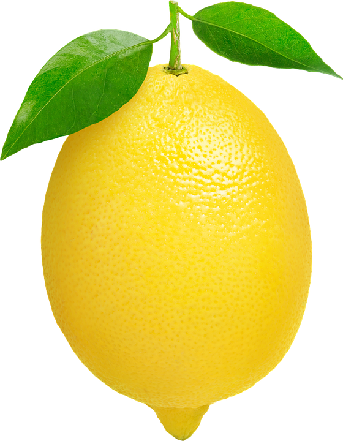
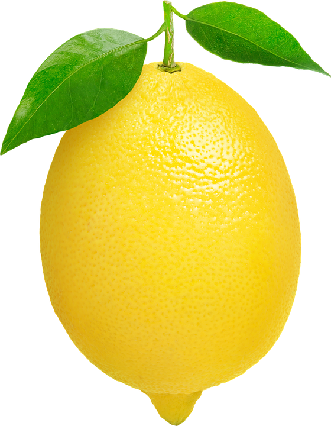

L'hiver
- Hiver
- La plus froide des quatre saisons de l'année (dans les zones tempérée et polaire), qui succède à l'automne.


La période d'hiver se déroule à partir du 21 décembre jusqu'au 20 mars dans l'hémisphère nord, il fait froid.
L'hiver météorologique coïncide avec les jours les plus courts et les températures les plus basses. Certaines régions connaissent les précipitations les plus fortes en hiver, ainsi qu'une humidité prolongée du fait que les basses températures ralentissent l'évaporation.
Les accumulations de neige et de glace sont principalement associées à l'hiver dans l'hémisphère nord, du fait des grandes masses continentales qui s'y trouvent.
Dans l'hémisphère sud, le climat plus maritime et la relative absence de masses continentales en dessous de 40° S rend les hivers plus doux ; la neige et la glace sont plus rares dans les zones habitées de l'hémisphère sud.
On en trouve toute l'année dans les régions élevées, comme les Andes, la Cordillère australienne et les montagnes de Nouvelle-Zélande, et parfois dans le sud de la Patagonie.
De façon générale, plus on se rapproche des pôles, et plus on s'éloigne vers l'est dans les masses continentales de l'hémisphère nord, plus l'hiver est réputé rigoureux. Cela est également vrai en montagne lorsque l'altitude augmente.


 
